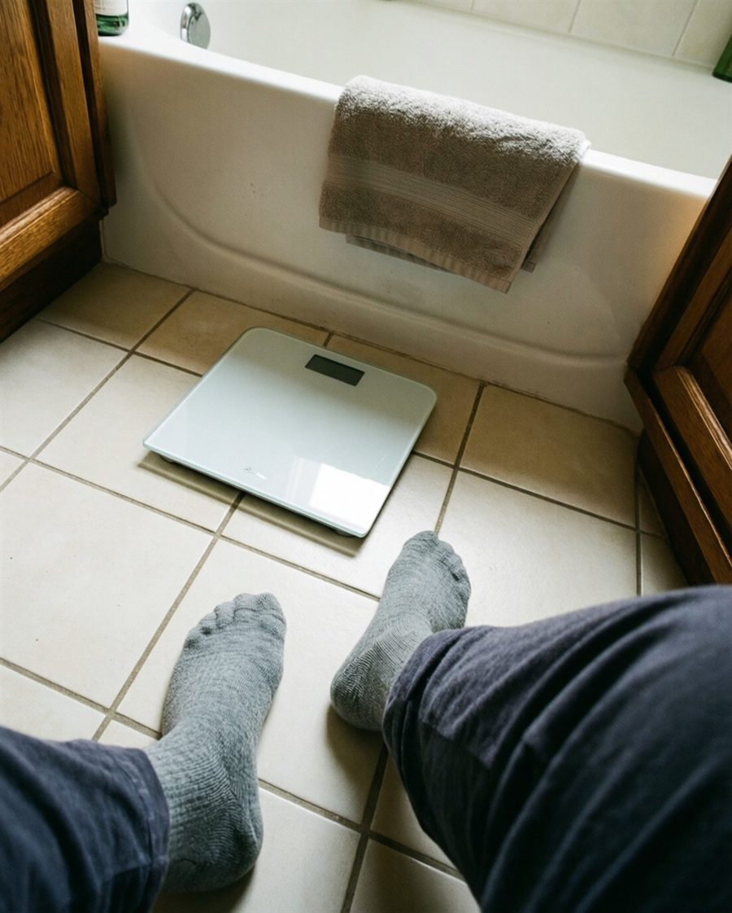

I kept my bathroom scale in the garage for three years

It went out there the week after my niece's wedding. I'd seen the photos. I came home, picked the scale up off the bathroom floor, carried it through the kitchen and put it on the top shelf in the garage, next to the deck stain.
My husband asked about it once. I said the batteries were dead. They weren't.
For three years that scale sat out there while I tried, quietly, all the things people try. The points app. The no-carb summer. The 6 a.m. walking group I joined in January and left in February. A gym membership I paid for until the card expired.
Every single time it ended the same way: I'd do well for a few weeks, then the one number I was chasing would stop moving, and I'd quit before anyone noticed I'd started.
The thing nobody had said
It was my friend Denise, at book club of all places, who said it. She'd started a program in the spring. I asked what was different, expecting a diet.
"Two things," she said. "A clinician actually looked at my history before anything got prescribed. And I stopped trusting one number."
She meant the scale. A regular scale gives you one figure. It can't tell you whether what's going is fat or muscle. And when people lose muscle along the way, the number stalls, they feel worse, and they give up. That was my whole story, three years of it, in two sentences.
What I actually did
I wrote a list at the kitchen table. Is a real clinician involved? What if I'm not eligible? What does it cost per month, not the "from" price? Can I cancel without a phone call?
Then I did the HumeCare+ quiz. It took about two minutes. A US clinician reviews what you enter, and the medication part only happens if they decide it's right for you. If it isn't, you're told so.
What I liked is that it isn't only a prescription. The protocol builds glycine, B12 and B6 in alongside the GLP-1 medication, there's an app with a daily plan, medication tracking and food logging, and there's a clinician I can message instead of waiting for an appointment.
And there's the Hume Pod, a body analyzer you step on once a week. It shows fat and muscle separately. Which, for someone who hid a scale in the garage, was the whole point.

What's different now
The old scale is still in the garage. I've decided it lives there.
The Pod sits by the bathroom door. I step on it on Monday mornings, before the coffee, and I look at two lines instead of one. Some weeks the number barely moves and the muscle line holds, and for the first time that doesn't make me quit.
I go to walking group again. I told my husband about the batteries.
What the HumeCare+ plan includes
- Online eligibility quiz (about 2 minutes) reviewed by a US clinician
- GLP-1 medication, prescribed only if a licensed clinician decides it's right for you
- Glycine, B12 and B6 built into the protocol
- Unlimited messaging with clinicians and 1:1 doctor support
- Hume app: daily plan, medication tracking, food logging
- Free next-day delivery, ships monthly, cancel anytime
- 90-day money-back guarantee
Before you click
Will I definitely get medication?
No. A licensed clinician reviews your answers and decides. Medication is prescribed only when it's right for you.
What does it cost?
$199 a month on the 3-month plan, with the consultation and doctor support included. It's FSA/HSA eligible.
Can I cancel?
Yes, anytime, with no fees. There's also a 90-day money-back guarantee.
Where is it available?
In the US, except Alabama, Arkansas, Louisiana and Mississippi.